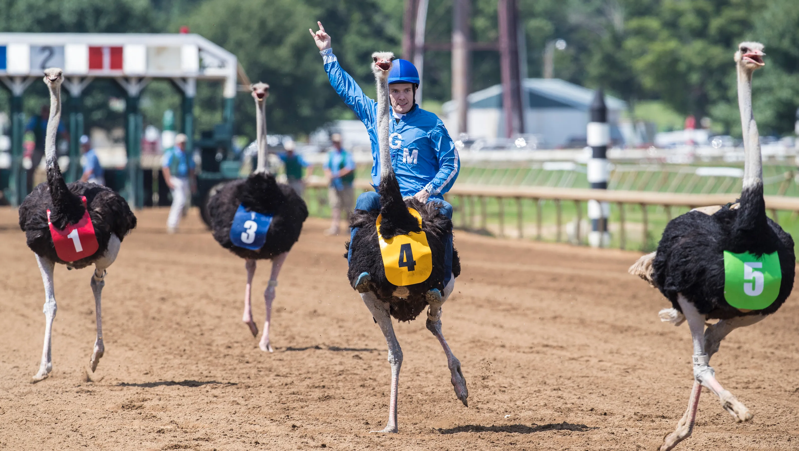
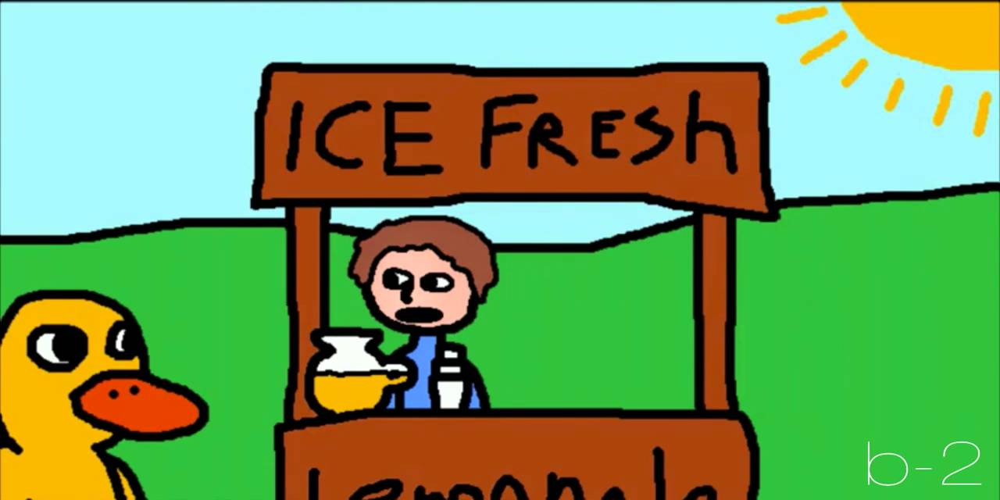

This is a list of some of my favorite colors, my favorite sport and also my favorite song.
Hot pink is my favorite color because of its bright properties also becuase some colors look to dark, too bland, too much but hot pink is just right.
Ostrich racing is my favorite because of how diffrent it is other than horse's how many things have you seen getting raced. also the ostrich goes up to 70 Kph

This is my favorite song because it is a classic and has been around for a long time i dont think it could ever be stopped

Thank you for taking your time to read about my favorite things.